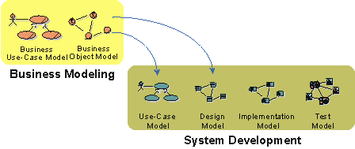
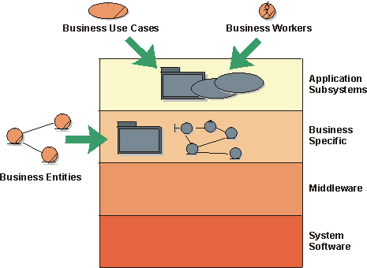
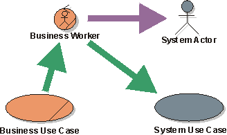
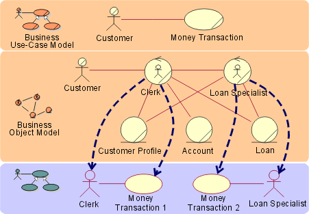
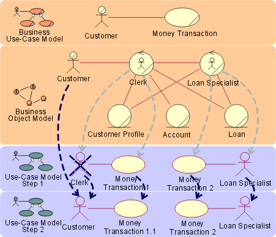
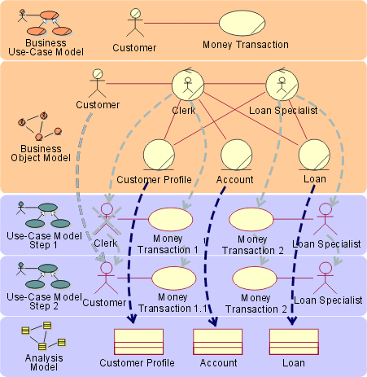
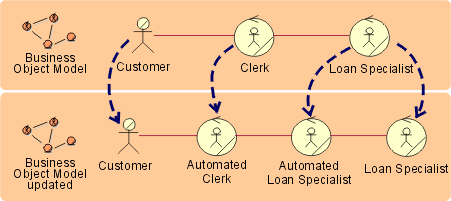

Guidelines:
Going from Business Models to Systems
Topics
The approach to business modeling presented in the Rational Unified Process
includes a concise and straightforward way to generate requirements for supporting
business tools or systems. A good understanding of business processes is
important for building the right systems. Even more value is added if you use people's roles and responsibilities, as well as definitions of what
"things" are handled by the business as a basis for building the
system. It’s from this more internal view of the business, captured in a
business object model, that you can see the tightest link to what the models of
the system needs to look like.

The relation between models of the business and models of
a supporting information system
From an architectural perspective, having business models in place is
particularly useful if your intent is to build one of the following kinds of
systems:
- Customized systems for one or more companies in a particular type of
industry, such as banks and insurance companies.
- A family of applications for the open market, such as order handling systems,
billing systems, and air-traffic control systems.
The business models give input to the use-case view and the logical
view as presented in the analysis model. You can also find key
mechanisms at the analysis level, which are referred to as analysis mechanisms.
The following should be considered:
- For each business use case that will be supported by the system, identify
a subsystem in the analysis model. This subsystem is in the application
layer and is considered a first prototype iteration. For example, if
you have an Order process and a Billing process in your business use-case
model, identify an Order subsystem and a Billing subsystem in the
application layer of your analysis model. You may argue that Order
and Billing are separate systems. Well, that’s a matter of scope. If you’re considering all of your business
tools as one system with
several applications that share architecture, Order and Billing would be
application subsystems. If your scope is to build an Order Management
application only, then Order Management would be your system and the
recommendation above would not make sense. It only makes sense if your scope is such that you consider all
business tools in your organization as one system.
- For each business worker supported by the system, identify
use cases that represent what is to be automated.
- For each business entity supported by the system, identify
entity classes in the analysis model. Some of these are candidates for being
considered as key mechanisms, the component entities, in the system.
- For clusters of business entities—a group of business
entities that are used solely within one business use case or a group of
otherwise closely related business entities—create a subsystem in the
business specific layer.

In a four-layered system architecture, business models give input to the top
two layers

For each business worker, identify a candidate system
actor. For each business use case the business actor participates in, create a
candidate system use case.
To identify information-system use cases, begin with the business workers in
the business object model. For each business worker, perform the following
steps:
- Decide if the business worker will use the information system.
- If so, identify an actor for the information system in the information
system’s use-case model. Give the actor the same name as the business
worker.
- For each business use case in which the business worker participates, create a
system use case.
- Repeat these steps for all business workers.
Example:

Based on business models of a bank, you can derive
candidate system actors and system use cases.
If you are aiming at building a system that completely automates a set of business
processes—which is the case if you are building an
e-commerce application—for example, it’s no longer the business worker who will become the
system actor. Instead, it’s the business actor who will directly communicate
with the system and act as a system actor.
You are, in effect, changing the way business is performed when building an
application of this kind. Responsibilities of the business worker will be moved
to the business actor.
Example:
When building an e-commerce site for a bank, you will be
modifying the way the process is realized.
-
Responsibilities of the Clerk will be moved to the
Customer.
-
Create a system actor Customer corresponding to the
business actor Customer.
-
Remove the system actor Clerk.
-
Modify the system use case Money Transaction 1 to work
with the system actor Customer, instead of Clerk.

Completely automating business workers changes the
way the business process is realized, as well as how you find system actors and use
cases
For each business entity, create a class in the system's analysis
model
A business entity to be managed by an information system will
correspond to an entity in the analysis model of the information system. In some
cases, however, it might be suitable to let attributes of the business entity
correspond to entities in the information-system model. Several business workers
can access a business entity. Consequently, the corresponding entities
in the system can participate in several information-system use cases.
Example:

The business entities Customer Profile, Account, and Loan
are all candidates for automation.
How should you interpret a link between workers in the business model? You
must find out how the information systems can support the communicating workers.
An information system can eliminate the need to transport information between
workers by making the information available in the information system.
If you intend to use the business object model for resource planning or as a
basis for simulation, you will need to update it to reflect what types of resources
are used. You need to modify it so that each business worker and business entity is
implemented by only one type of resource. If your aim is to re-engineer the
business process, in the first iteration of your business object model, you
should not consider resources. Doing so tends to make you focus on the already existing
solutions, rather than on identifying problems that can be solved with new kinds of
solutions. Here's an example of a procedure to consider:
- In a first iteration of the business object model, work without
considering the resources or the systems that will be used to implement the
business.
- Discuss what can be automated.
- Discuss how automation can change the business process and start sketching
out a system use-case model and system requirements.
- In a second iteration to the business object model, update it to reflect
resources used and what is to be automated.
- Some business workers will be tagged as automated workers.
- Some business workers will be split into two—one automated, the
other one
not.
- Parts of two business workers may be partitioned out to a new
automated worker.
- Parts of a business worker’s responsibility may be moved outside
of the organization to become the responsibility of a business actor.
Example:
In the banking example, we decided to update the business
object model in order to use it for resource planning.
-
The Clerk business worker is completely automated and
becomes an Automated Clerk. The bank will only do on-line banking.
-
The Loan Specialist is partly automated, and is split into
an Automated Loan
Specialist and a Loan Specialist.

The business workers are modified to reflect automation
The following table summarizes the relationship between the business models
and the system models.
| System
Models |
How
to find candidates, using information in the business models |
Business
Models |
| Actor |
Actor
candidates are found among business workers. |
Business
worker |
| Actor |
Other
actor candidates are found among the different business actors (customers,
vendors) that will directly use the system. |
Business
actor |
| Use
case |
Use-case
candidates are found among business-workers’ operations. Look for
operations, and areas of responsibility, that involve interactions with the
information system. Ideally one information system use case supports
all the business worker’s operations within one business model use-case
realization. |
Business
workers’ operations |
| Entity
class |
Entity
class candidates are found among business entities. Look for business
entities that should be maintained or represented in the information system. |
Business
entity |
| Entity
class |
Entity
class candidates are found among attributes in the business object model.
Look for attributes that should be maintained or represented in the
information system. |
Attributes |
| Relationships
between entity classes |
Relationships
between business entities often indicate a corresponding relationship
between the classes in the information system model. |
Relationships
between business entities |
Copyright
© 1987 - 2001 Rational Software Corporation
| |

|
 Artifacts >
Artifacts >
 Business Modeling Artifact Set >
Business Modeling Artifact Set >
 Business Object Model... >
Business Object Model... >
 Business Object Model >
Business Object Model >
 Guidelines >
Guidelines >